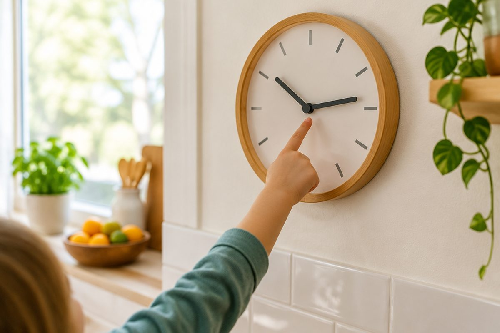

전체 단원 › 2학년 2학기 › 수학 › 시계 보기
시곗바늘이 알려 주는 시각은?

⏰ 학교 가는 시각, 잠자는 시각. 시계를 보면 알 수 있어요. 짧은바늘과 긴바늘을 읽는 법을 배워요.
짧은바늘과 긴바늘
시계에는 바늘이 두 개 있어요.
짧은바늘은 '시'를 알려 줘요.
긴바늘은 '분'을 알려 줘요.
짧은바늘 3, 긴바늘 12 → 3시
몇 시, 몇 시 30분
긴바늘이 12를 가리키면 '몇 시'예요.
긴바늘이 6을 가리키면 '몇 시 30분'이에요.
30분일 때 짧은바늘은 두 숫자 사이에 있어요.
7시: 짧은바늘 7, 긴바늘 12 / 6시 30분: 짧은바늘 6과 7 사이, 긴바늘 6
이렇게 풀어요: 몇 시 몇 분 읽기
긴바늘이 숫자 한 칸을 가면 5분이에요.
긴바늘이 가리키는 숫자에 5씩 뛰어 세요.
짧은바늘은 지나온 숫자를 읽어요.
① 짧은바늘 2와 3 사이 → 2시 ② 긴바늘 4 → 5, 10, 15, 20 → 20분 ③ 2시 20분
1시간은 60분
긴바늘이 한 바퀴 돌면 60분이 지나요.
60분은 1시간이에요.
낮 12시 전은 오전, 낮 12시 후는 오후예요.
8시 → 1시간 뒤 → 9시 / 1시간 30분 = 90분
핵심 낱말
- 짧은바늘
- '시'를 알려 주는 짧은 바늘
- 긴바늘
- '분'을 알려 주는 긴 바늘
- 30분
- 긴바늘이 6을 가리킬 때, 1시간의 반
- 1시간
- 긴바늘이 한 바퀴 도는 동안, 60분
- 오전·오후
- 전날 밤 12시부터 낮 12시까지는 오전, 낮 12시부터 밤 12시까지는 오후
한 줄 정리
- 짧은바늘은 시, 긴바늘은 분을 알려 줘요.
- 긴바늘 12는 '몇 시', 6은 '30분', 한 칸은 5분이에요.
- 긴바늘이 한 바퀴 돌면 60분 = 1시간이에요.
학교 교육과정 연결
- [2수03-07] 시계를 보고 시각을 ‘몇 시 몇 분’까지 읽을 수 있다.
- [2수03-08] 1시간과 1분의 관계를 이해하고, 시간을 ‘시간’, ‘분’으로 표현할 수 있다.